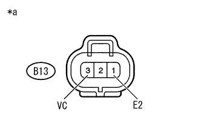

DTC P0550/75 PS圧力センサ系統 |
DTC P0552/75 PS圧力センサ系統(Low) |
DTC P0553/75 PS圧力センサ系統(High) |
| DTC No. SAE/TCCS | DTC検出条件
| 点検部位 |
|---|---|---|
| P0550/75 |
|
|
| P0552/75 |
|
|
| P0553/75 |
|
|
| 手順1 | ワイヤハーネスおよびコネクター点検（エンジンコントロールコンピュータ - パワーステアリングオイルプレッシャセンサ） |
参照。エンジンコントロールコンピュータのコネクターB36およびB37を切り離す。
パワーステアリングオイルプレッシャセンサのコネクターB13を切り離す。
SST(トヨタエレクトリカルテスター)を使用して、端子間の抵抗を測定する。(端子配列は参照)
| 点検端子 | 点検条件 | 基準値 |
|---|---|---|
| B36-18 (VC) - B13-3(VC) | 常時 | 1 Ω未満 |
| B37-29 (PSP) - B13-2(PSP) | 常時 | 1 Ω未満 |
| B36-28 (E2) - B13-1 (E2) | 常時 | 1 Ω未満 |
| 点検端子 | 点検条件 | 基準値 |
|---|---|---|
| B36-18 (VC)およびB13-3(VC) - 他の端子間およびボデーアース | 常時 | 10 kΩ以上 |
| B37-29 (PSP)およびB13-2(PSP) - 他の端子間およびボデーアース | 常時 | 10 kΩ以上 |
| B36-28 (E2)およびB13-1 (E2) - 他の端子間 | 常時 | 10 kΩ以上 |
|
| ||||
| OK | |
| 手順2 | ワイヤハーネスおよびコネクター点検（VC電圧） |
参照。|  |
パワーステアリングオイルプレッシャセンサのコネクターB13を切り離す。
IG ONにする。
SST(トヨタエレクトリカルテスター)を使用して、端子間の電圧を測定する。
| 点検端子 | 点検条件 | 基準値 |
|---|---|---|
| B13-3 (VC) - B13-1 (E2) | IG ON | 4.5 to 5.5 V |
| *a | 車両ワイヤハーネスコネクター前側 (パワーステアリングオイルプレッシャセンサ接続コネクター) |
|
| ||||
| OK | |
| 手順3 | パワーステアリング オイル プレッシャ センサ交換 |
パワーステアリングオイルプレッシャセンサを交換する。
| 次へ | |
| 手順4 | ダイアグコード消去 |
SST(TaSCAN) をDLC3に接続する。
IG ON にする。
SST(TaSCAN) の画面表示に従ってダイアグコードを消去する。(要領は参照)
| 次へ | |
| 手順5 | ダイアグコード確認 |
走行テストを実施する。
SST(TaSCAN) をDLC3に接続する。
IG ON にする。
SST(TaSCAN) の画面表示に従い、ダイアグコードを読み取る。(要領は参照)
| 結果 | 飛び先 |
|---|---|
| 出力なし | A |
| P0550/75、P0552/75、P0553/75が出力される | B |
|
| ||||
| A | ||
| ||